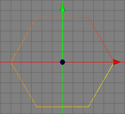

Reverse Sequence Tool
Every spline has a beginning and an end. The sequence will be displayed through the color of the spline. The beginning is yellow, the end is red.
Because many creator tools depend on the sequence of a spline it can be often useful to change the sequence of a spline. This can be done with the reverse sequence tool. After applying it the beginning of the former spline will be its end and the end of the old spline will be its beginning. The images below demonstrate the before and after effects of using the Reverse Sequence Tool.
 
Modes
The create spline tool is available in all modes. Note that it makes most sense to use it in point mode since you can only see the control points and point selections in point mode. This reverse sequence tool only works on raw spline objects.


To use the reverse sequence tool, you just have to call the reverse sequence command from the menu "Tools SplineReverse Sequence". Every sub spline of a spline object which has a selected control point will now be reversed. If no spline has a selected control point every spline will be reversed. It is therefore strongly recommended to use this tool only in point mode, because it is the only mode where you can see which control points are selected and therefore you can only see in this mode which splines will be actually reversed.
SplineReverse Sequence". Every sub spline of a spline object which has a selected control point will now be reversed. If no spline has a selected control point every spline will be reversed. It is therefore strongly recommended to use this tool only in point mode, because it is the only mode where you can see which control points are selected and therefore you can only see in this mode which splines will be actually reversed.
Keys
- none
Properties
- none